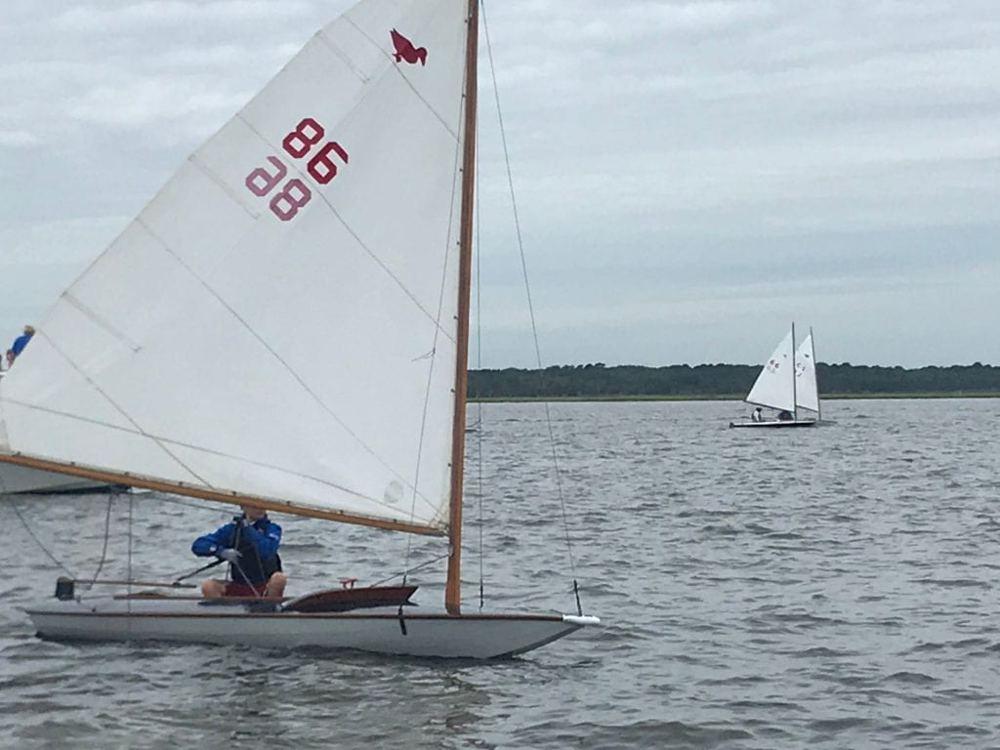
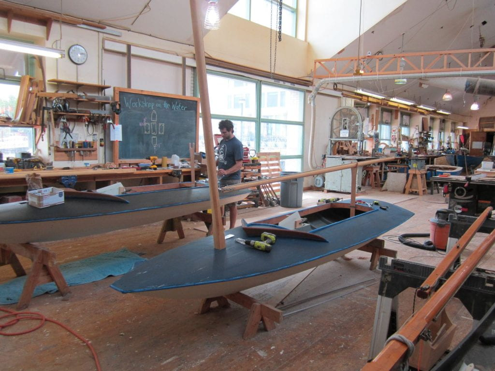

Current Project Blog
Q&A
WHAT WILL THE BOAT BE USED FOR?
In these courses, students will build a 12′ wooden duckboat made of cedar and mahogany. The boat will be donated to the Independence Seaport Museum collection to be launched in a naming ceremony at Penn’s Landing in May 2022. In August 2022, the boat will be entered in the World Ducks Charity Regatta in Barnegat, NJ to compete in an amateur sailing race. The duckboat will be on display alongside student research creative works in the Penn State Abington Art Gallery in September and October of 2022 before being returned to Independence Seaport Museum to support the museum’s educational programming.
Whats a Duckboat?
 Duckboats originated as boats called “sneakboxes” which were traditionally used throughout the Delaware Valley and New Jersey Shore region. Sneakboxes are low profile single-person rowboats designed for duck hunting in shallow marshlands. The sneakbox design evolved to include a basic sailing rig to bring game to market quickly. This led to faster and faster designs, and a culture of racing was quickly established. Before the advent of plastic boats, a duckboat would have been a young person’s first sailboat where they learned the physics of sailing as well as boat maintenance and so it’s a fitting project for our Penn State Abington students as they learn about the waterways in the region via a multitude of disciplines through the lens of the rich craft of wooden boatbuilding.
WHAT ARE THE COURSES INVOLVED IN THIS PROJECT?
- ART197B: Interdomain Special Topics
- Introduction to Wooden Boatbuilding I (3 credits) GA, GH
- ART269: Methods and Materials I
- Introduction to Wooden Boatbuilding I (3 credits) Art major/minor studio requirement
- ART297C: Interdomain Special Topics
- Introduction to Wooden Boatbuilding II (3 credits) GA, GH
- ART469: Methods and Materials II
- Introduction to Wooden Boatbuilding II (3 credits) Art major/minor studio requirement
THIS COURSE SEQUENCE AND RELATED PROGRAMS ARE MADE POSSIBLE WITH THE GENEROUS SUPPORT OF:
- The Pennsylvania State University Schreyer Institute for Teaching Excellence 2021 Teaching Innovation Grant
- The Penn State Center, Philadelphia 2021 Seeding Change Grant
- The Pennsylvania State University – Abington College 2021 Chancellor’s Grant funded by the Albert and Suzanne Lord Chancellor Endowment.
- The Pennsylvania State University – Abington College 2021 Faculty Development Grant
- The Pennsylvania State University – Humanities Institute
- The Pennsylvania State University – Abington College Division of Arts and Humanities
- The Penn State Abington Art Gallery
- The Pennsylvania State University – Abington College Student Initiated Fee Fund